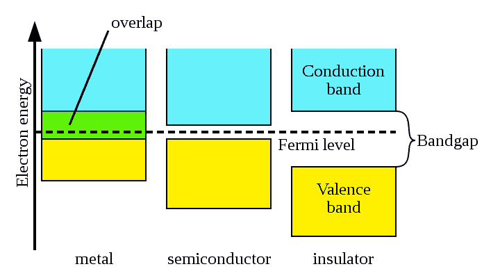

Definition of Electrical Conductance
Equation or Formula of Electrical Conductance
Specific Conductance or Conductivity
Definition of Electrical Conductivity
Unit of Conductance
Unit of Conductivity
Band Theory for Electrical Conductivity
Valance Band
Conduction Band
Band Gap
Electrical Conductivity of Metal
Electrical Conductivity of Semiconductor
Electrical Conductivity of Insulator
What is Conductance?
When we apply same potential difference across different conductors, we will see different currents flow through them. Actually how much electric current will flow through a specific conductor for certain applied potential difference across it, depends upon a specific property of the conductor, called electrical conductance . This property determines how easily a electric current can flow through a conductor.
As we know resistance is such a property of a conductor which resists the flow of electric current through it. That means, electrical conductance is reciprocal property of resistance. Generally conductance is denoted as,
Definition of Electrical Conductance
Electrical conductance is defined as a special property of a conductor which determines how easily an electric current can flow through it.
Equation or Formula of Electrical Conductance
Let us take a piece of conductor of length l and cross sectional area A. If length of the conductor is increased, the electrons have to drift more paths. Hence more chance of inter atomic collision. That means electric current gets much harder path to travel, means electrical conductance of the conductor is reduced.
Thus conductance is inversely proportional to length of the conductor.
If cross sectional area of conductor is increased then electric current gets more drift electrons. Hence, conductance of the conductor is increased.
From equation (1) & (2),
Where, σ = constant of proportional known as conductivity or specific conductance .
Specific Conductance or Conductivity
In the equation of the conductance we have already mentioned the term σ or Sigma as conductivity. Now in that equation if we put l = 1 m & A = 1 m2 then G = σ. That indicates σ is the conductance of a conductor whose length is 1 m & cross sectional area is 1 m2. That mean specific conductance or conductivity is the conductance of a conductor whose volume is 1 m × 1 m2 = 1 m3.
Definition of Electrical Conductivity
Conductivity is the conductance of a material per unit volume.
Electrical conductivity is a basic property of material. Due to this property one material can conduct electricity. Some materials are good conductor of electricity that means electric current can pass through them very easily; again some materials do not allow electric current to flow through them. The material through which electric current passes easily, called good conductor of electricity in other words, the electrical conductivity of these materials is high. On the other hand the materials do not allow the electric current to flow through them are called electrical insulators. There are some materials whose electrical conductivity is not as high as conductor and also not as poor as insulator, they have an intermediate conductivity and these type of materials are known as semiconductors.
Unit of Conductance
As we mentioned earlier conductance is reciprocal of resistance of resistance. That is,
Unit of resistance is ohm & that is why unit of conductance is generally written as mho - the reverse spelling of ohm. A modern electrical engineering, mho is named by Siemens.
Unit of Conductivity
The equation of conductivity, we have already deducted as,
Hence, unit of conductivity is,
Here, S is Siemens.
Table of Resistivity and Conductivity of Different Materials at 20°C
| Material | Resistivity at 20°C | Conductivity 20°C |
|---|---|---|
| Air | 1.3 × 1016 to 3.3 × 1016 | 3 × 10-15 to 8 × 10-15 |
| Aluminum | 2.82 × 10-8 | 3.5 × 107 |
| Annealed copper | 1.72 × 10-8 | 5.80 × 107 |
| Calcium | 3.36 × 10-8 | 2.98 × 107 |
| Carbon (amorphous) | 5 × 10-4 to 8 × 10-4 | 1.25 to 2 × 103 |
| Carbon (diamond) | 1 × 1012 | ~10-13 |
| Carbon (graphite) | 2.5 × 10-6 to 5.0 × 10-6 //basal plane | 2 to 3 × 105 //basal plane |
| Carbon steel | -1010 | 1.43 × 10-7 |
| Constantan | 4.9 × 10-7 | 2.04 × 106 |
| Copper | 1.68 × 10-8 | 5.96 × 107 |
| Deionized water | 1.8 × 105 | 5.5 × 10-6 |
| Drinking water | 2 × 101 to 2 × 103 | 5 × 10-4 to 5 × 10-2 |
| Fused quartz | 7.5 × 1017 | 1.3 × 10-18 |
| GaAs | 5 × 10-7 to 10 × 10-3 | 5 × 10-8 to 103 |
| Germanium | 4.6 × 10-1 | 2.17 |
| Glass | 10 × 1010 to 10 × 1014 | 10-11 to 10-15 |
| Gold | 2.44 × 10-8 | 4.10 × 107 |
| Grain oriented electrical steel | 4.60 × 10-7 | 2.17 × 106 |
| Hard rubber | 1 × 1013 | 10-14 |
| Iron | 1.0 × 10-7 | 1.00 × 107 |
| Lead | 2.2 × 10-7 | 4.55 × 106 |
| Lithium | 9.28 × 10-8 | 1.08 × 107 |
| Manganin | 4.82 × 10-7 | 2.07 × 106 |
| Mercury | 9.8 × 10-7 | 1.02 × 106 |
| Nichrome | 1.10 × 10-6 | 9.09 × 105 |
| Nickel | 6.99 × 10-8 | 1.43 × 107 |
| Paraffin wax | 1 × 1017 | 10-18 |
| PET | 10 × 1020 | 10-21 |
| Platinum | 1.06 × 10-7 | 9.43 × 106 |
| Sea water | 2 × 10-1 | 4.8 |
| Silicon | 6.40 × 102 | 1.56 × 10-3 |
| Silver | 1.59 × 10-8 | 6.30 × 107 |
| Stainless steel | 6.9 × 10-7 | 1.45 × 106 |
| Sulfur | 1 × 1015 | 10-16 |
| Teflon | 10 × 1022 to 10 × 1024 | 10-25 to 10-23 |
| Tin | 1.09 × 10-7 | 9.17 × 106 |
| Titanium | 4.20 × 10-7 | 2.38 × 106 |
| Tungsten | 5.60 × 10-8 | 1.79 × 107 |
| Wood (damp) | 1 × 103 to 4 | 10-4 to 10-3 |
| Wood (oven dry) | 1 × 1014 to 16 | 10-16 to 10-14 |
| Zinc | 5.90 × 10-8 | 1.69 × 107 |
Band Theory for Electrical Conductivity
The electrons in the outer most orbit of an atom experiences least attraction force. So the outermost atom can easily be detached from the parent atom. Let’s explain the details with band theory
When a number of atoms are brought together, the electrons of one atom experience forces of other atoms. This effect is most pronounced in outer most orbits. Due to this force, the energy levels, which were sharply defined in an isolated atom, are now broadened into energy bands. Due to this phenomenon generally two bands result, namely valance band and conduction band.
Valance Band
The outermost orbital of an atom, where electrons are so tightly bounded that; they cannot be removed as free electron
Conduction Band
This is the highest energy level or orbital in outer most shell, in which electrons are free enough to move.
Band Gap
There is one energy gap that separates these two bands, the valance band and conduction band. This gap is called forbidden energy gap.
Electrical Conductivity of Metal
In metals, the atoms are so tightly packed that electron of one atom experience sufficiently significant force of other closed atoms. The result, the valance band and conduction band in metals come very closer to each other and may even overlap. Consequently, by receiving very small amount of energy from external heat or electrical energy source, the electrons readily ascend to higher levels in the metal. Such electrons are known as free electrons. These free electrons are responsible for electric current that flows through a metal. When external electric source is connected to a piece of metal, these free electrons start flowing towards higher potential terminal of the source, causing current to flow in the metal. In metal, density of free electrons in conduction band is much higher than other materials, hence metal is referred as very good electrical conductor. In other words electrical conductivity of metal is very good.

Table for Conductivity of Different Metals
| Metals | Conductivity in Siemens/meter at 20°C |
|---|---|
| Silver | 6.30×10 7 |
| Copper | 5.96X10 7 |
| Aluminium | 3.5X10 7 |
| Annealed copper | 5.80X10 7 |
| Calcium | 2.98X10 7 |
| Carbon steel (1010) | 6.99X10 6 |
| Constantan | 2.04X10 6 |
| GaAs | 5X10−8 to 10 3 |
| Gold | 4.10X10 7 |
| Grain oriented electrical steel | 2.17X10 6 |
| Iron | 1.00X10 7 |
| Lead | 4.55X10 6 |
| Lithium | 1.08X10 7 |
| Manganin | 2.07X10 6 |
| Mercury | 1.02X10 6 |
| Nichrome | 9.09X10 5 |
| Nickel | 1.43X10 7 |
| Platinum | 9.43X10 6 |
| Stainless steel | 1.45X10 6 |
| Tin | 9.17X10 6 |
| Titanium | 2.38X10 6 |
| Tungsten | 1.79X10 7 |
| Zinc | 1.69X10 7 |
Electrical Conductivity of Semiconductor
In semiconductor the valance band and conduction band are separated by a forbidden gap of sufficient width. At low temperature, no electron possesses sufficient energy to occupy the conduction band and thus no movement of charge is possible. But at room temperature it is possible for some electrons to give sufficient energy and make the transitions in conduction band. The density of electrons in conduction band at room temperature is not as high as in metals, thus cannot conduct electric current as good as metal. The electrical conductivity of semiconductor is not as high as metal but also not as poor as electrical insulator. That is why, this type of material is called semiconductor - means half conductor.
Table for Conductivity of Different Semiconductors
| Semiconductor | Conductivity in Siemens/meter at 20°C |
|---|---|
| Germanium | 2.17 |
| Silicon | 1.56X10− 3 |
Electrical Conductivity of Insulator
Ideally electrical conductivity of an electrical insulator is nil. The atoms in the insulator molecules are electrically stable enough. The outer most shells of these atoms are completely filled with electrons. In such material where forbidden gap is very large and as a result the energy required by the electron to cross over to the conduction band is practically large enough. Insulators do not conduct electricity easily. That means the electrical conductivity of insulator is very poor.
Table for Conductivity of Different Insulators
| Insulator | Conductivity in Siemens/meter at 20°C |
|---|---|
| Air | 3X10−15 to 8×10−15 |
| Fused quartz | 1.3X10−18 |
| Glass | 10−11 to 10−15 |
| Hard rubber | 10− 14 |
| Paraffin wax | 10−18 |
| PET | 10−21 |
| Sulfur | 10−16 |
| Teflon | 10−25 to 10−23 |
| Wood | 10− 16 to 10 -14 |
 by
by